ホーチミン市街の北東、フーニャン区にある法華寺は五重塔が御自慢の寺だ。 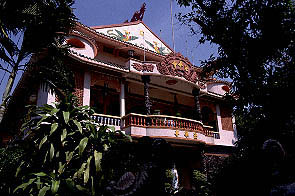 本堂。 例によって2階が本堂、1階は食堂などなど。1994年に改装されたばかりなので奇麗だ。 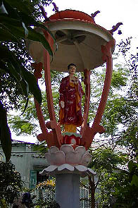 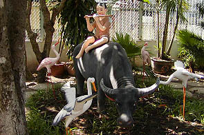 本堂前の庭には素敵な仲間達が点在している。 水牛の上で笛を吹く小僧は何かの説話にでもでてくるのだろうか。他でも見かけたモチーフだ。 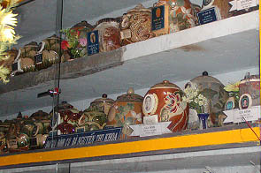 本堂左には納骨堂が独立して建っていた。勿論中には素敵な骨壷がずらりと並んでいて私めをうっとりさせてくれる。 １階の宿坊的なところに坊さんがいたので中を拝観したい由を伝えるとその坊さん、奥から一人の青年僧を呼んで来た。 青年はこの寺唯一のイングリッシュスピーカーで、鼻毛が立派な兄貴だった。名前を聞いたが難しくて忘れちゃいました。 彼の案内で2階の本堂に行く。 本堂に入ると正面に仏像が並んでいる。と、鼻毛兄貴がおもむろに隅の配電盤に向かいスイッチをガチャコン！と入れると。 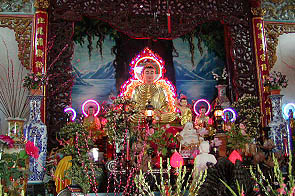 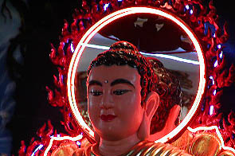 おおおお。ドリームオンドリーム！電飾が付きましたぞよ。 中央の本尊は頭の後ろだけでなく体の後ろの部分にまで電飾光背がついており一際きらびやかだ。 しかーも、背景の絵にまでライトをあてる芸の細かさよ。あとはミラーボールとサーチライトとバリーライトがあれば完璧な演出ですな。 小気味よい演出にすっかり浮き浮き気分になった私を見て鼻毛兄貴も「よしよし」と御満悦気味。そのまま五重塔になだれ込む。 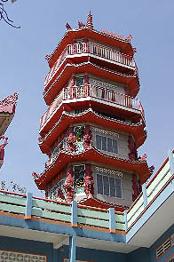 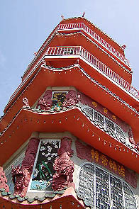 五重塔は本堂2階のテラスの上に建つタイプ。ホーチミンでは主流のタイプだ。1990年に出来たそうだ。高さは32メートル。 上２層にはテラスも付いている。四角い形だが一応端が隅切りしてあり、龍の柱がそれぞれの角に付いている。 コンクリート造なれど中々凝った造りだ。逓減率のことはもう言うまい。 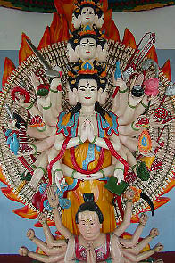 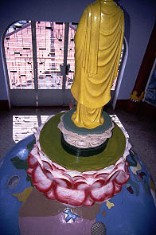 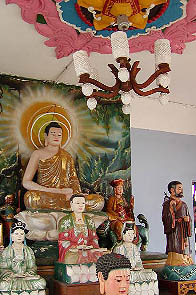
内部の各階には様々な仏像が鎮座している。 3層目の千手千眼観音はヒンズー教の神像を思わせるようなこってり風味。持ち物もかなりカラフルだ。 千手千眼観音像の上はドームになっていてその上の階の４層目の半球形の地球儀になっている。 地球儀の上に仏像が乗るスタイルももうお馴染みですね。 地球儀には所々ガラスブロックはめ込みの小さな丸窓が付いていて下の階の明かり取りにもなっている。 仏陀像のまつられている階の天井飾りもナイスでした。 最上階のテラスに出てみる。周りには大きな建物が無く良い眺めだった。 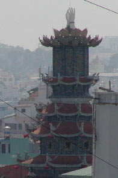 近くにに見逃せない変な塔を発見。鼻毛兄貴に寺の名前を聞き早速向かう事にした。 サンキュウ、鼻毛兄貴。
珍寺大道場 HOME